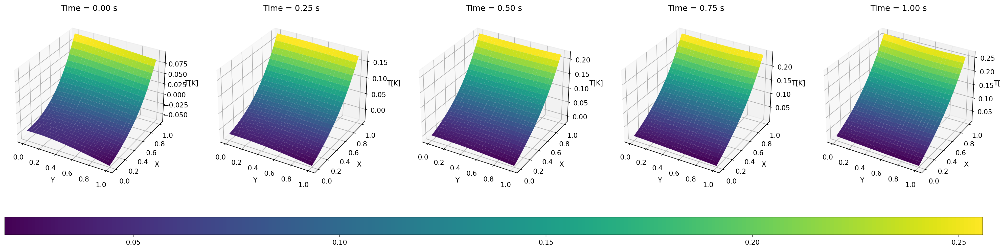

Setting the default backend to "tensorflow.compat.v1". You can change it in the ~/.deepxde/config.json file or export the DDE_BACKEND environment variable. Valid options are: tensorflow.compat.v1, tensorflow, pytorch, jax, paddle (all lowercase)
Compiling model...
Building DeepONetCartesianProd...
'build' took 0.086493 s
/home/damian/.local/lib/python3.8/site-packages/deepxde/nn/tensorflow_compat_v1/deeponet.py:549: UserWarning:
`tf.layers.dense` is deprecated and will be removed in a future version. Please use `tf.keras.layers.Dense` instead.
/home/damian/.local/lib/python3.8/site-packages/deepxde/nn/tensorflow_compat_v1/deeponet.py:556: UserWarning:
`tf.layers.dense` is deprecated and will be removed in a future version. Please use `tf.keras.layers.Dense` instead.
/home/damian/.local/lib/python3.8/site-packages/deepxde/nn/tensorflow_compat_v1/deeponet.py:570: UserWarning:
`tf.layers.dense` is deprecated and will be removed in a future version. Please use `tf.keras.layers.Dense` instead.
'compile' took 26.017443 s
Training model...
Step Train loss Test loss Test metric
0 [2.57e+00, 4.03e-01, 4.13e-01, 6.71e-01, 1.05e+00] [2.19e+00, 2.88e-01, 4.46e-01, 6.22e-01, 4.51e-01] []
1000 [9.69e-03, 4.88e-03, 7.58e-04, 2.86e-02, 3.63e-04] [1.25e-02, 5.13e-03, 1.31e-03, 2.96e-02, 9.29e-04] []
2000 [2.79e-03, 2.39e-03, 2.50e-04, 2.61e-02, 1.67e-04] [4.95e-03, 2.43e-03, 6.75e-04, 2.66e-02, 2.56e-04] []
3000 [1.81e-03, 9.38e-04, 8.22e-05, 2.58e-02, 6.91e-05] [3.42e-03, 1.02e-03, 4.12e-04, 2.62e-02, 7.67e-05] []
Best model at step 3000:
train loss: 2.87e-02
test loss: 3.11e-02
test metric: []
'train' took 36.754497 s
El historial de perdida para el entrenamiento obtenido es el siguiente:
Código
import plotly.graph_objects as go# Nombres de las componentes del lossloss_labels = ["PDE residual loss","Initial‐condition loss","Left‐boundary (Dirichlet) loss","Right‐boundary (Neumann) loss","Top/Bottom‐boundary (Neumann) loss"]# Extraer pasos y pérdida de entrenamientosteps = losshistory.stepstrain_loss = np.array(losshistory.loss_train) # Asegurarse de que sea array NumPy# Crear figurafig = go.Figure()# Agregar cada componente del lossfor i inrange(train_loss.shape[1]): fig.add_trace(go.Scatter( x=steps, y=train_loss[:, i], mode='lines', name=loss_labels[i] ))# Layout con escala logarítmica y notación científicafig.update_layout( title="Training Loss history", xaxis=dict( title="Iteration", tickformat=".1e"# Notación científica ), yaxis=dict( title="Loss",type="log", tickformat=".1e"# Notación científica ), template="plotly_white", legend=dict(x=0.99, y=0.99), font=dict(size=14))fig.show()
Figura 3.1: Historial de perdida en el entrenamiento de la red neuronal.
El historial de perdida para el conjunto de prueba es el siguiente:
Código
import plotly.graph_objects as go# Nombres de las componentes del lossloss_labels = ["PDE residual loss","Initial‐condition loss","Left‐boundary (Dirichlet) loss","Right‐boundary (Neumann) loss","Top/Bottom‐boundary (Neumann) loss"]# Extraer pasos y pérdida de entrenamientosteps = losshistory.stepstest_loss = np.array(losshistory.loss_test) # Crear figurafig = go.Figure()# Agregar cada componente del lossfor i inrange(test_loss.shape[1]): fig.add_trace(go.Scatter( x=steps, y=test_loss[:, i], mode='lines', name=loss_labels[i] ))# Layout con escala logarítmica y notación científicafig.update_layout( title="Test Loss history", xaxis=dict( title="Iteration", tickformat=".1e"# Notación científica ), yaxis=dict( title="Loss",type="log", tickformat=".1e"# Notación científica ), template="plotly_white", legend=dict(x=0.99, y=0.99), font=dict(size=14))fig.show()
Figura 3.2: Historial de perdida en el conjunto de prueba de la red neuronal.
A continuación, los valores predichos por la red neuronal a tiempos t(s) de 0, 0.25, 0.5, 0.75 y 1.0.
Código
import matplotlib.pyplot as pltfrom mpl_toolkits.mplot3d import Axes3Dimport matplotlib.gridspec as gridspec# Times at which to evaluate the modeltimes = [0.0, 0.25, 0.5, 0.75, 1.0]# Generate a grid of (x, y) pointsnum_points =25x = np.linspace(0, 1, num_points)y = np.linspace(0, 1, num_points)X, Y = np.meshgrid(x, y)# Create a figure and a GridSpec layout.# We reserve one row at the bottom for the colorbar.ncols =len(times)fig = plt.figure(figsize=((5* ncols) +1, 6))gs = gridspec.GridSpec(2, ncols, height_ratios=[10, 1], hspace=0.3)# Create a list to store the surface plots for the color bar.surf_list = []for i, t_val inenumerate(times):# Create trunk input for the model: shape (num_points^2, 3) points = np.vstack((X.flatten(), Y.flatten(), t_val * np.ones_like(X.flatten()))).T# Create branch input: for your constant zero initial condition,# just use an array of zeros with shape (1, num_sensors) branch_input = np.zeros((1, sensor_pts.shape[0]))# Predict predicted = model.predict((branch_input, points)) predicted = predicted.flatten()# Reshape to 2D Z = predicted.reshape(X.shape)# 3D subplot ax = fig.add_subplot(gs[0, i], projection="3d")# Plot surface surf = ax.plot_surface( Y, X, Z, rstride=1, cstride=1, cmap="viridis", edgecolor="none", antialiased=True ) surf_list.append(surf) ax.set_title(f"Time = {t_val:.2f} s") ax.set_xlabel("Y") ax.set_ylabel("X") ax.set_zlabel("T[K]")# Create a single color bar below all subplots# We take the mappable from the last subplot (or average from one)cbar_ax = fig.add_subplot(gs[1, :])# Use the mappable from the last subplot; orientation horizontal.fig.colorbar(surf_list[-1], cax=cbar_ax, orientation="horizontal")#plt.tight_layout()plt.show()

Figura 3.3: Predicciones de la red neuronal a distintos tiempos.
Figura 3.4: Resultados reportados por Alessio Borgi (2023) en el caso 2D.